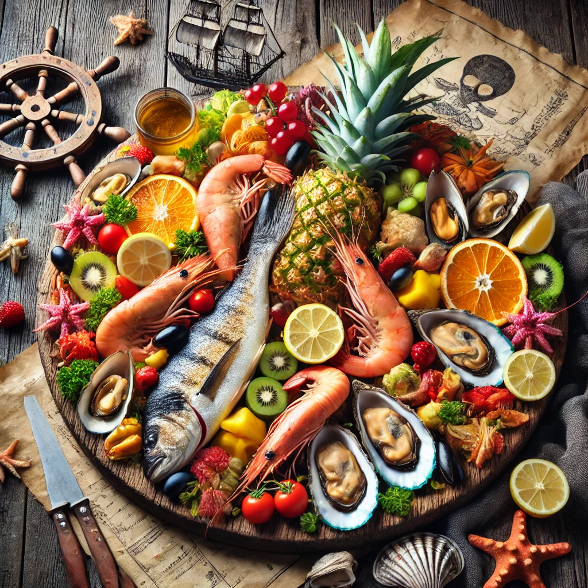

THE BUSTY MERMAID

Pirate’s Plunder Platter
Ingredienser og Oppskrift:
Velkommen til Pirate’s Plunder Platter – en tallerken fylt med skatter fra havet! Denne retten er laget for å tilfredsstille selv de mest erfarne pirater og eventyrere, og den kommer med alt du trenger for å føle deg som en ekte sjørøver.
Så, hva ligger egentlig på piratenes platter? Her er oppskriften for å lage den beste sjømatfesten på dette eventyret:
- Friske **reker** (hentet rett fra havets hjerte)
- Grillet **fisk** (perfekt stekt, som et piratskip i full seilas)
- Bløtdyr som **mussels** og **østers** (for den ekte sjømat-elskeren)
- Smaksrike **krydder** (som bringer en smak av tropiske øyer til bordet)
Hvordan lage Pirate's Plunder Platter:
- Samle ingrediensene fra havets bunn (eller lokale fiskehandler) og grill fisken til den er perfekt stekt.
- Pynt med de beste sjømatbitene og server på et rustikk fat.
- Skål, og vær forberedt på å nyte den ekte smaken av havet – som et ekte eventyr.
OBS: Denne retten er kjent for å sette piratene i høyeste beredskap – den kan få deg til å se etter skjulte skatter på menyen!